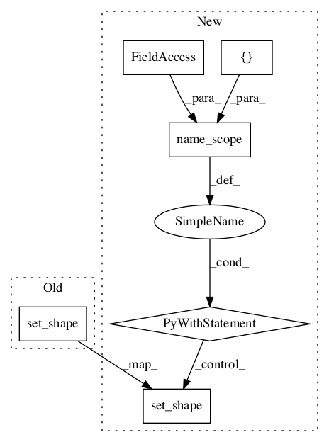

4ef810643f162aebb1d9efd153a82e0dc9e9094e,garage/tf/core/layers.py,TfGRULayer,get_output_for,#TfGRULayer#Any#,1243
Before Change
n_batches = input_shape[0]
state = tf.tile(
tf.reshape(self.h0, (1, self.num_units)), (n_batches, 1))
state.set_shape((None, self.num_units))
if self.horizon is not None:
outputs = []
for idx in range(self.horizon):
output, state = self.gru(After Change
return self.gru(x, hprev, scope=self.scope)[1]
def get_output_for(self, input, **kwargs):
with tf.name_scope(self.name, values=[input]):
input_shape = tf.shape(input)
n_batches = input_shape[0]
state = tf.tile(
tf.reshape(self.h0, (1, self.num_units)), (n_batches, 1))
state.set_shape((None, self.num_units))
if self.horizon is not None:
outputs = []
for idx in range(self.horizon):
output, state = self.gru(
input[:, idx, :], state,
scope=self.scope) // self.name)
outputs.append(tf.expand_dims(output, 1))
outputs = tf.concat(axis=1, values=outputs)
return outputs
else:
n_steps = input_shape[1]
input = tf.reshape(input, tf.stack([n_batches, n_steps, -1]))
// flatten extra dimensions
shuffled_input = tf.transpose(input, (1, 0, 2))
shuffled_input.set_shape((None, None, self.input_shape[-1]))
hs = tf.scan(
self.step, elems=shuffled_input, initializer=state)
shuffled_hs = tf.transpose(hs, (1, 0, 2))
return shuffled_hs
def get_output_shape_for(self, input_shape):
n_batch, n_steps = input_shape[:2]
return n_batch, n_steps, self.num_units
In pattern: SUPERPATTERN
Frequency: 3
Non-data size: 6
Instances Project Name: rlworkgroup/garage
Commit Name: 4ef810643f162aebb1d9efd153a82e0dc9e9094e
Time:
Author: null
File Name: garage/tf/core/layers.py
Class Name: TfGRULayer
Method Name: get_output_for
Project Name: rlworkgroup/garage
Commit Name: 4ef810643f162aebb1d9efd153a82e0dc9e9094e
Time:
Author: null
File Name: garage/tf/core/layers.py
Class Name: BatchNormLayer
Method Name: get_output_for
Project Name: rlworkgroup/garage
Commit Name: 4ef810643f162aebb1d9efd153a82e0dc9e9094e
Time:
Author: null
File Name: garage/tf/core/layers.py
Class Name: TfBasicLSTMLayer
Method Name: get_output_for